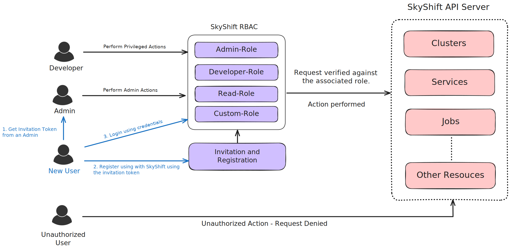

Authentication in SkyShift#
SkyShift utilizes authentication and fine-grained access control over SkyShift objects. The API utilizes a JWT-based authentication and role-based access control (RBAC) to ensure secure and efficient access management.
User Registration via Invitation#
User registration in SkyShift is initiated through an invitation system, where existing users with the necessary permissions can send invitations to prospective users. This process uses JWTs to secure and specify the parameters of the invitation.
Roles:
1. By default, SkyShift supports “roles” which can be associated with a user and provide varying access controls. SkyShift comes with three default roles which can be viewed using:
skyctl get roles
⠙ Fetching roles
NAME AGE
admin-role 3m
inviter-role 3m
reader-role 3m
2. Apart from the default roles, additional roles can be created for various access controls. Role creation can only be done by admins or users having permissions to create new roles using:
skyctl create role my-custom-role –action=create –action=delete –resource=services
⠙ Creating role
Created role my-custom-role.
✔ Creating role completed successfully.
We can get roles to verify the new role and associated metadata.
⠙ Fetching roles
NAME AGE
admin-role 9m
inviter-role 9m
my-custom-role 1m // New role shows up
reader-role 9m
Similarly, more custom rules can be added to a role via YAML. For example:
kind: Role
metadata:
name: my-custom-role
namespaces:
- default
- production
rules:
- name: my-custom-role-rule
resources:
- services
actions:
- create
- delete
users:
- user1
- user2
This can be applied using skyctl apply -f <path_to_yaml> Let’s verify the new role creation using YAML.
skyctl get roles
⠙ Fetching roles
NAME AGE
admin-role 2m
inviter-role 2m
my-custom-role 1m
my-custom-role-1 2s
reader-role 2m
3. Further, authorized users can delete roles specified role from SkyShift which immediately revokes the role and associated permissions. We can do this using:
skyctl delete role my-custom-role
⠙ Deleting role
Deleted role my-custom-role.
✔ Deleting role completed successfully.
Once the roles are established, we can go ahead and invite new users to SkyShift.
Invitation Process Invitations can be created by already registered users in SkyShift shared with external users for registration. We will go through basic invite operations.
- Creating a new invite:
New invitations can be created using: skyctl invite –role=reader-role Once the invite is created, the invitation token is visible on the CLI and can be shared to new users.
⠙ Creating inviteInvitation created successfully. Invite: <invitation_token_printed>
- Registering on SkyShift:
New users can obtain the invitation token and use it to register on SkyShift. This can be done using: skyctl register <username> <password> –invite <invitation token>
skyctl register myUsername myPassword --invite <invitation token> ⠼ Registering userRegistration successful. ✔ Registering user completed successfully.
- Logging into SkyShift.
Once the registration process is complete, users can log into SkyShift and perform privilegd actions. This can be done using: skyctl login <username> <password>
skyctl login myUsername myPassword ⠼ Logging inLogin successful. Access token is stored at ~/.skyconf/config.yaml. ✔ Logging in completed successfully.
You are now logged in and can manage SkyShift resources.
- Revoking an Invite
If an invite token is compromised, it can be revoked to prevent new users from registering using: skyctl revoke_invite <token>
skyctl revoke_invite my_token ⠙ Revoking inviteInvitation revoked. invite `my_token` revoked but it's used already ✔ Revoking invite completed successfully.
This revokes the invite, if the invite was already used, you will see a warning indicating that it’s already been used.
SkyShift Auth Flow:
{kind=link}